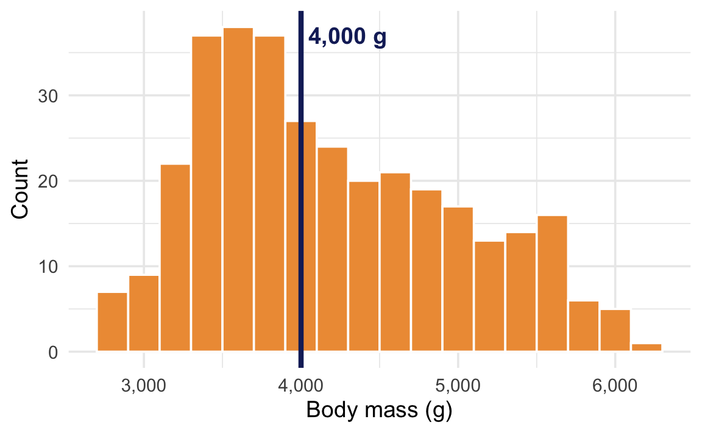
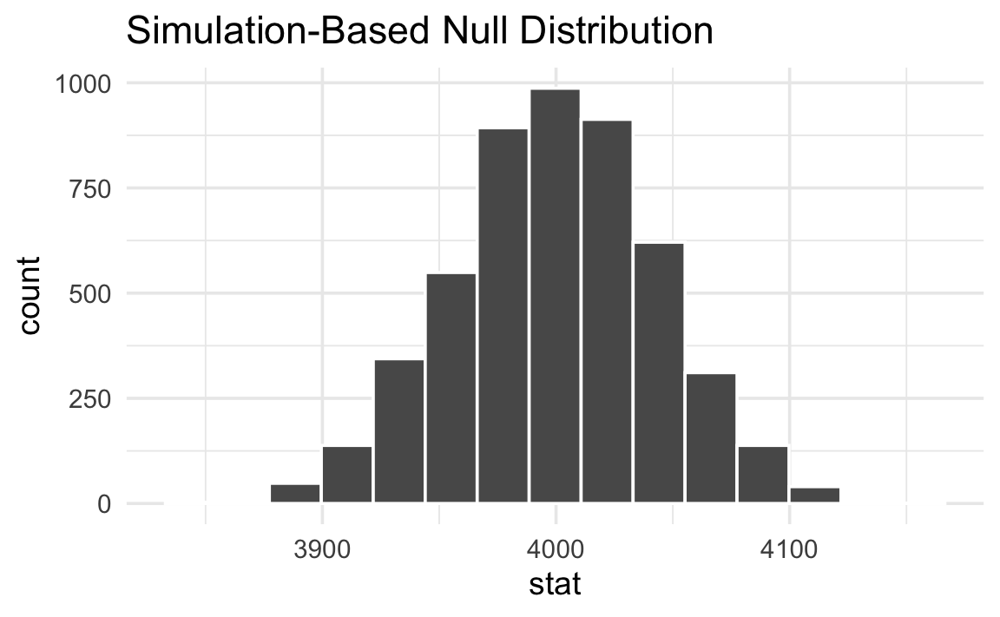
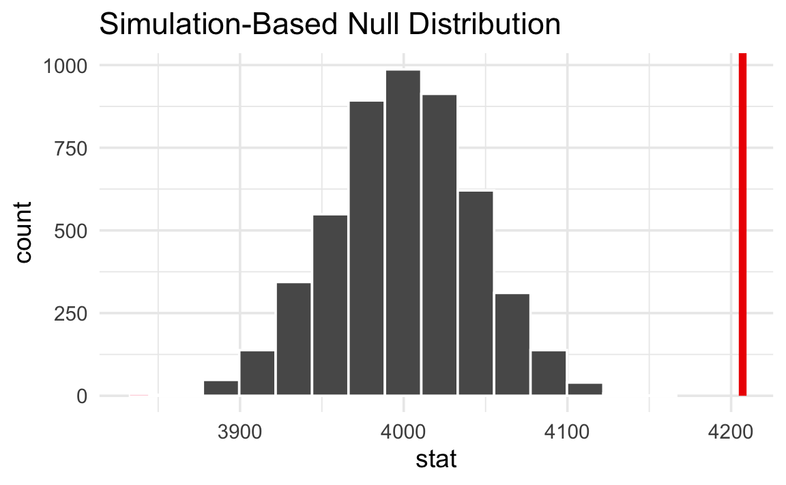

jstat = require("jstat@1.9.6")
clrs = ({
gold: "#f3d567",
orange: "#ee9b43",
coral: "#e74b47",
crimson: "#b80422",
navy: "#172767",
teal: "#19798b"
})
function statLabel(value, textFn, dy, nullValues) {
const extent = d3.extent([...nullValues, value]);
const range = extent[1] - extent[0];
const pos = range === 0 ? 0.5 :
(value - extent[0]) / range;
const textAnchor = pos > 0.82 ? "end" :
pos < 0.18 ? "start" : "middle";
const dx = textAnchor === "end" ? -10 :
textAnchor === "start" ? 10 : 0;
const common = {
x: d => d, frameAnchor: "top", dy, dx,
text: textFn,
fontWeight: "bold", fontSize: 14,
textAnchor, paintOrder: "stroke"
};
return [
Plot.text([value], {
...common,
stroke: "white", strokeWidth: 4, fill: "black"
})
];
}One-sample mean
One-sample mean
◎◉○
Live simulation
The sample statistic (δ) is the difference between the sample mean and the comparison value (μ₀).
We create a null distribution by recentering and bootstrapping. We shift our data so its average equals the comparison value (μ₀), then resample from that shifted data (with replacement) hundreds of times. This creates a world where the population mean is the comparison value.
Think of this as being a world where the true mean is μ₀. Importantly, this doesn’t mean that every bootstrapped sample mean will be exactly μ₀. There is variation in the data, and that variation is reflected in the null world. What it means is that in the null world, the sample mean is μ₀ ± some amount.
Here’s what the recentering and resampling looks like. The left table shows the original data shifted so its mean equals μ₀. The right table shows one bootstrap resample drawn from that shifted data (with replacement—notice some rows appear more than once):
Recentered data
Bootstrap resample
When we do this resampling hundreds of times and compute the mean each time, we get a null distribution—a picture of what sample means look like in a world where the true mean is μ₀.
Here’s what this null world looks like:
Next we put our observed sample mean inside that null world and see how comfortably it fits there.
Is it surprising to see the red line in this null world? Is the line way out to one of the sides, or is it near the middle with the rest of the null world?
We can actually quantify the probability of seeing that red line in a null world. This is a p-value—the probability of seeing a sample mean at least that far from μ₀ in a world where the true mean is μ₀.
The p-value is
Finally, we have to decide if the p-value meets an evidentiary standard or threshold that would provide us with enough evidence that we aren’t in the null world (or, in more statsy terms, enough evidence to reject the null hypothesis).
There are lots of possible thresholds. By convention, most people use a threshold (often shortened to α) of 0.05, or 5%. But that’s not required! You could have a lower standard with an α of 0.1 (10%), or a higher standard with an α of 0.01 (1%).
Evidentiary standards
When thinking about p-values and thresholds, I like to imagine myself as a judge or a member of a jury. Many legal systems around the world have formal evidentiary thresholds or standards of proof. If prosecutors provide evidence that meets a threshold (i.e. goes beyond a reasonable doubt, or shows evidence on a balance of probabilities), the judge or jury can rule guilty. If there’s not enough evidence to clear the standard or threshold, the judge or jury has to rule not guilty.
With p-values:
- If the probability of seeing an effect or difference (or δ) in a null world is less than 5% (or whatever the threshold is), we rule it statistically significant and say that the difference does not fit in that world. We’re pretty confident that it’s not zero.
- If the p-value is larger than the threshold, we do not have enough evidence to claim that δ doesn’t come from a world of where there’s no difference. We don’t know if it’s not zero.
Importantly, if the difference is not significant, that does not mean that there is no difference. It just means that we can’t detect one if there is. If a prosecutor doesn’t provide sufficient evidence to clear a standard or threshold, it does not mean that the defendant didn’t do whatever they’re charged with†—it means that the judge or jury can’t detect guilt.
NoteDifferent evidentiary standards
Many legal systems have different levels of evidentiary standards:
- Standards of proof in most common law systems (juries):
- Balance of probabilities (civil cases)
- Beyond a reasonable doubt (criminal cases)
- Evidentiary thresholds in the United States (juries):
- Preponderance of the evidence (civil cases)
- Clear and convincing evidence (more important civil cases)
- Beyond a reasonable doubt (criminal cases)
- Standards of proof in China (judges):
- 高度盖然性 [gāo dù gài rán xìng] / highly probable (civil cases)
- 证据确实充分 [zhèng jù què shí chōng fēn] / facts being clear and evidence being sufficient | the evidence is definite and sufficient (criminal cases)
- Levels of doubt in Sharia systems (judges):
- غلبة الظن [ghalabat al-zann] / preponderance of assumption (ta’zir cases and family matters)
- اليقين [yaqin] / certainty (hudud/qisas cases)
- Standard of proof in the International Criminal Court (judges):
- Beyond reasonable doubt (genocide, crimes against humanity, or war crimes)
Average penguin body mass
For this example, we’ll use the body mass of all penguins near Palmer Station, Antarctica. We want to know if the average body mass is different from 4,000 grams.
At first glance, it looks like most penguins are already roughly around 4,000 grams. Some are lighter, a lot are heavier, but 4,000 seems fairly reasonable.

We can look at this more officially. First, we’ll load some packages and check the official average weight:
library(tidyverse)
library(infer)
library(parameters)
penguins <- penguins |> drop_na(sex)
penguins |>
summarize(avg_weight = mean(body_mass)) avg_weight
1 4207.057The sample mean is 4,207 g, which is a bit higher than our comparison value of 4,000 g. But is that difference real, or could it just be due to random chance?
Null hypothesis inference with {infer}
The sample statistic we’re interested in is the mean body mass.
delta <- penguins |>
specify(response = body_mass) |>
calculate(stat = "mean")
deltaResponse: body_mass (numeric)
# A tibble: 1 × 1
stat
<dbl>
1 4207.The sample mean is 4,207 grams. We’re comparing this to μ₀ = 4,000 g, so the difference (δ) is 207 grams.
We create a null distribution by recentering our data around μ₀ = 4,000 g and then bootstrapping (resampling with replacement) from that shifted data. This creates a world where the true population mean is 4,000 g.
shuffled_data <- penguins |>
specify(response = body_mass) |>
hypothesize(null = "point", mu = 4000) |>
generate(reps = 5000, type = "bootstrap")Next we need to calculate the mean in each of these 5,000 resampled worlds:
null_world <- shuffled_data |>
calculate(stat = "mean")
null_worldResponse: body_mass (numeric)
Null Hypothesis: point
# A tibble: 5,000 × 2
replicate stat
<int> <dbl>
1 1 4010.
2 2 4017.
3 3 3939.
4 4 3991.
5 5 3946.
6 6 3967.
7 7 3965.
8 8 4004.
9 9 3986.
10 10 3930.
# ℹ 4,990 more rowsHere’s what this null world looks like:
null_world |>
visualize()
Notice that the null world is centered around 4,000 g—our comparison value—with variation reflecting what sample means would look like if the true mean really were 4,000 g.
Next we put our observed sample mean inside that null world to see how comfortably it fits there.
null_world |>
visualize() +
shade_p_value(obs_stat = delta, direction = NULL)That’s way out in the right tail. A sample mean of 4,207 g looks really unlikely in a world where the true mean is 4,000 g.
We can quantify the probability of seeing that red line in a null world. This is a p-value—the probability of seeing a sample mean at least that far from μ₀ in a world where the true mean is 4,000 g.
null_world |>
visualize() +
shade_p_value(obs_stat = delta, direction = "two-sided")
p_value <- null_world |>
get_p_value(obs_stat = delta, direction = "two-sided")Warning: Please be cautious in reporting a p-value of 0. This result is an approximation based on the number of `reps` chosen in the `generate()` step.
ℹ See `get_p_value()` (`?infer::get_p_value()`) for more information.p_value# A tibble: 1 × 1
p_value
<dbl>
1 0The p-value is < 0.001. This means that in a world where the true mean body mass is 4,000 g, there is a < 0.1% chance of seeing a sample mean at least as far from 4,000 as 4,207.
Finally, we have to decide if the p-value meets an evidentiary standard or threshold that would provide us with enough evidence that we aren’t in the null world (or, in more statsy terms, enough evidence to reject the null hypothesis).
Using an α of 0.05, the p-value is < 0.001, which is less than 0.05. We have enough evidence to say that the average penguin body mass is statistically significantly different from 4,000 grams.
null_world |>
visualize() +
shade_p_value(obs_stat = delta, direction = "two-sided")
Null hypothesis inference with t.test()
In practice, most people do not simulate null worlds. Instead, they use a one-sample t-test, which approximates the null world mathematically using a t-distribution. The intuition is the same: a p-value is still the probability of seeing a sample mean at least that extreme in a world where the true mean is μ₀.
To test whether the average body mass differs from 4,000 g, we can use t.test() with mu = 4000:
t.test(penguins$body_mass, mu = 4000)
One Sample t-test
data: penguins$body_mass
t = 4.6925, df = 332, p-value = 3.952e-06
alternative hypothesis: true mean is not equal to 4000
95 percent confidence interval:
4120.256 4293.858
sample estimates:
mean of x
4207.057 The p-value is in that wall of text—it’s 3.952e-06, or 3.952 × 10−6, or 0.000003952. That’s really tiny. In a world where the average weight for all penguins is around 4,000 grams, it would be virtually impossible to see a difference as extreme as 4,207. We have enough evidence to declare that difference is statistically significant.
If you don’t like all that text output, you can feed the results of t.test() to the model_parameters() function from the {parameters} package:
t.test(penguins$body_mass, mu = 4000) |>
model_parameters() |>
display(caption = "")| Parameter | Mean | mu | Difference | 95% CI | t(332) | p |
|---|---|---|---|---|---|---|
| Alternative hypothesis: true mean is not equal to 4000 | ||||||
| body_mass | 4207.06 | 4000 | 207.06 | (4120.26, 4293.86) | 4.69 | < .001 |
Footnotes
Kind of—in common law systems, defendants are presumed innocent until proven guilty, so if there’s not enough evidence to prove guilt, they are innocent by definition. ↩︎